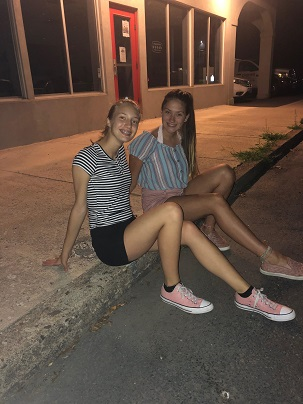
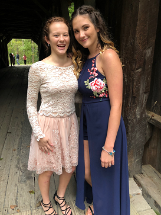
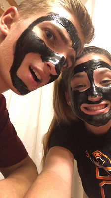
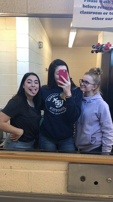

Family and Friends
Allie is my best friend. When I moved to Pennsylvania, one of the very first people that i've ever met was Allie. She goes to Susquenita High School and since the first time we met, we've been the best of friends. We've had a bond more meaningful than that; like sisters. We've spent more time with each other at our houses than our own! When we get older, we have hopes to move into an apartment together and live the best life possible.

This is Gia. We met in school and play volleyball together. Everytime we're together we laugh until we almost have an accident. We've had a lot of classes together and we just act like complete fools. On the court, in stores, on the streets, catch us laughing about the studpidest things.
This is Dane. He is super important in my life. We've been friends since I moved here as well. He is now my best friend as well as an amazing boyfriend! He's so funny, caring, and just has the most amazing personality. This summer we spent a lot of time together including the time I beat him at mariokart and minigolf.

Jess and Dani are two of my best friends. Both are super outgoing and have attitudes that you would consider needed attention. I've had classes with them in them for the past two years. Freshman year we had gym class together and we always like to compete against each other and show the boys up. Especailly lecrosse but we're not allowed to speak about that...

These are all of my best friends. We have that kind of group that you see in movies that they last a lifetime. I have no idea where i'd be without any of these people. They've been here for as long as I can remember. Ups and downs are bad but they're still around.
- I've traveled to 14 states but never out of the country
- I want to go into Radiology and go to West Virginia University and play D1 volleyball for the XII.
- I had both my grandma and my aunt living with me at some point in my life. They were both apart of my awesome support group
- I would like to go Australia. It's been a huge dream since I was a kid.
- I go to West Virginia on occasion to see my family and friends since they couldn't move too. I tried..